Week 6 Lab - Sampling and Interpolation
What You’ll Learn:
- Systematic and random sampling
- Stratified sampling
- Majority filtering
- Basic interpolation methods
You will also begin working more with Raster data in this exercise. In previous exercises you have USED raster data, but here, you will begin CREATING raster data, specifically from vector data, using interpolation methods.
Data for the exercise are in the L12.zip file.
https://github.com/mapninja/Earthsys144/raw/master/data/L12.zip
Background: The ideas behind the exercises are covered in Chapter 12 (Spatial Estimation) and 10 (Raster Analysis) of the GIS Fundamentals textbook.
Sampling and Interpolation in QGIS
We’ll practice the mechanics of creating sample points in QGIS, and use them to extract data from a DEM, and practice interpolation. We’ll then compare the interpolated surface to the original DEM to calculate an error surface, and extract error statistics from a different set of sample points from the same DEM.
We’ll apply both systematic and random sampling. We’ll also develop and apply a stratification layer, because sometimes you want to stratify your sample, which means you wish to increase sample density in some portion of your area, using a map of zones, or strata.
- Start QGIS, add the DEM from southeast Arizona, ChirDEM, and...
- Apply a color scheme to highlight topography in the DEM. Note the variation in topography, where there is a significant amount of change, where there is little change.
- Open the Processing>Toolbox
- Search for ‘Hillshade’
- Use the Raster Terrain Analysis>Hillshade tool to create a hillshade:

- Use a solar altitude (vertical angle) of
25 degrees, and Azimuth of315. - Browse and Name the Output
Hillshade.

- When finished, put the
Hillshadeunderneath theChirDEMand set theChirDEMRendering to Multiply, in the Layer Styling Panel.
Keeping Organized
To keep your work organized, group your data layers within the Layers panel. There will be four (4) parts of the lab. Each will involve a related set of data layers. You can group layers within the Layers Panel to improve organization.
- Select both the DEM and hillshade in the TOC (shift-click (PC) or cmd-click (Mac), then right click, and finally click on “Group Selected” in the dropdown.
- Rename this Group: Original
We have now Grouped the original data. As you create layers for each of the three different interpolation methods, select appropriate layers and Group them, then right click to assign a logical group name. I suggest names of:
- Original
- Inverse Distance
- Nearest Neighbor
- Spline Stratified
If you create a layer and it belongs to a group you don’t want it to belong to, right click and select “Move Out of Group”.
Maps will be done in Landscape view and arrange the layers as below for your final output. You’ll need to set your print canvas to landscape orientation and make sure the map images don’t overlap.

Systematic Sampling and IDW Interpolation
We’ll first perform a systematic (grid) sampling, and then an Inverse Distance interpolation.
- Open Vector Tools>Research Tools>Regular Points. (Or look up Regular Points in the processing toolbox.)
- Set the input extent by clicking on the options button (arrow 1), and select Calculate from layer, using the
ChirDEMlayer. - Set the point spacing/count to
1000, - check use point spacing, to specify you want points 1000m apart (see at right).
- Specify an output coordinate system if it is not already set to
EPSG:26912(that ofChirDEM) - Browse to save the the output as SystematicGrid1000m.shp

A regular grid of points should be displayed on your screen, if not, navigate to the file you created and display it.
It should look something like the figure below.

Next we will extract the elevation values at these points.
- Return to the Processing Toolbox and use the Raster Analysis>Sample raster values tool, from the QGIS tools.
- Specify:

This should generate a point layer similar the original, but with an added table column that contains the sampled elevation below each point:

Inspect the table for Elevation1000mGrid noting the attributes and their values.
Note the column with our specified prefix, SAMPLE_1 here, is filled with elevation values.
Interpolation of Sample Points (Vector to Raster Conversion)
Now, perform an Inverse Distance Weighted interpolation:
- Return to the Processing Toolbox Panel and use the search box to find the GRID:Inverse distance to a Power

- Specify:
- Point Layer:
Elevation1000mas your - Weighting Power:
2 - Smoothing:
1 - Radii of search ellipse:
1000for both search ellipses - Max number of data points to use:
12 - Min number of data points to use:
1 - Open up Advanced Parameters.
:
SAMPLE_1(This is the elevations values field) - We want to create ~30m raster cells, but this is actually quite clunky to control using the GRID tools from GDAL, as we are. Paste the following code into the Additional command-line parameters [optional]:
- Point Layer:
-tye 3498779.8925000000745058 3522569.8972999998368323 -txe 658307.9677000000374392 686597.9734000000171363 -outsize 943 793
This is the XY Extents, in UTM, as well as the dimensions, in pixels, that we want our output file to have, and if you open the properties of the ChirDEM layer, you will see that it has the same dimensions. We are simply using it’s values as a template. You can take a look at docs for GDAL_GRID tools, here: https://gdal.org/programs/gdal_grid.html
- Interpolated (IDW) Output: Browse to save to your project folder and name:
IDWsysP2_12 - Leave the rest of the settings at
defaultand run the tool

You can see the “pattern” created by the interaction between search ellipses, and the sample points.

- Return to your Original Group and right-click on the
ChirDEM>Styles>Copy Style - Now, right-click on your
IDWsysP2_12>Styles>Paste Style to copy the color ramp and classification you used in your OriginalChirDEMlayer.


Creating Contours (Raster to Vector Conversions)
Generate contours for the interpolated surface with the Main Menu>Raster>Extraction>Contour tool.
- Input Layer:
IDWsysP2_12 - Interval:
100(meters, since this is the CRS unit) - Contours Output: Browse and save as
IDW100mContours.shp
- Input Layer:

- As you did with the original
ChirDEM, use the Raster terrain analysis>Hillshade to create anIDWHillshadelayer with yourIDWsysP2_12, using an Azimuth of 315 and Elevation of 25 - Group the
IDW,IDWHillshade, andcontours, pulling them into an IDW Group. - Arrange the layers so that your Hillshade is between your
IDWsysP2_12and IDW100mContours layer, similar to the image, below (not necessarily the same colors, etc...):

Random Sampling and Nearest Neighbor Interpolation
Now we will make use of a new sampling strategy and generate a set of random sampling points:
- Open the Vector Tools>Research Tools>Random Points in Extent tool
- Input Extent >...>Calculate from Layer>
ChirDEM - Number of Points:
1000 - Minimum Distance:
60 meters - Maximum number of search attempts…:
200 - Browse and save the Output Random Points as:
Random1000Points

- Now sample the elevation values from
ChirDEMas you did with the systematic layer, using the Processing Toolbox>Raster> Analysis>Sample raster values
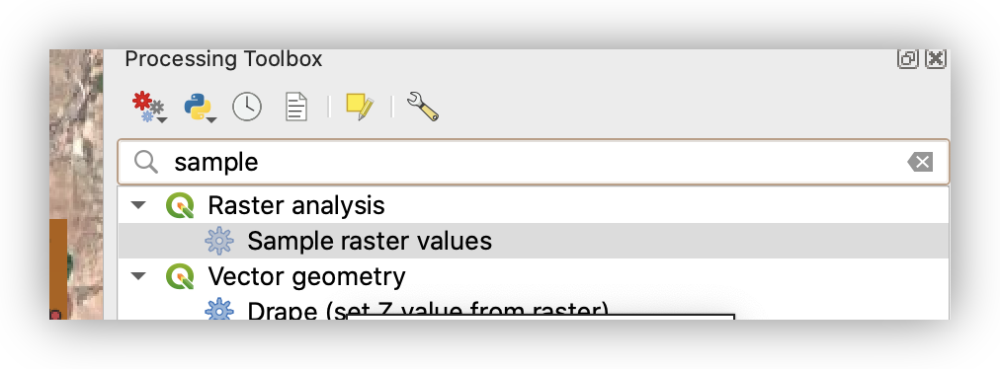
- Name the output something like Random1000Elevation

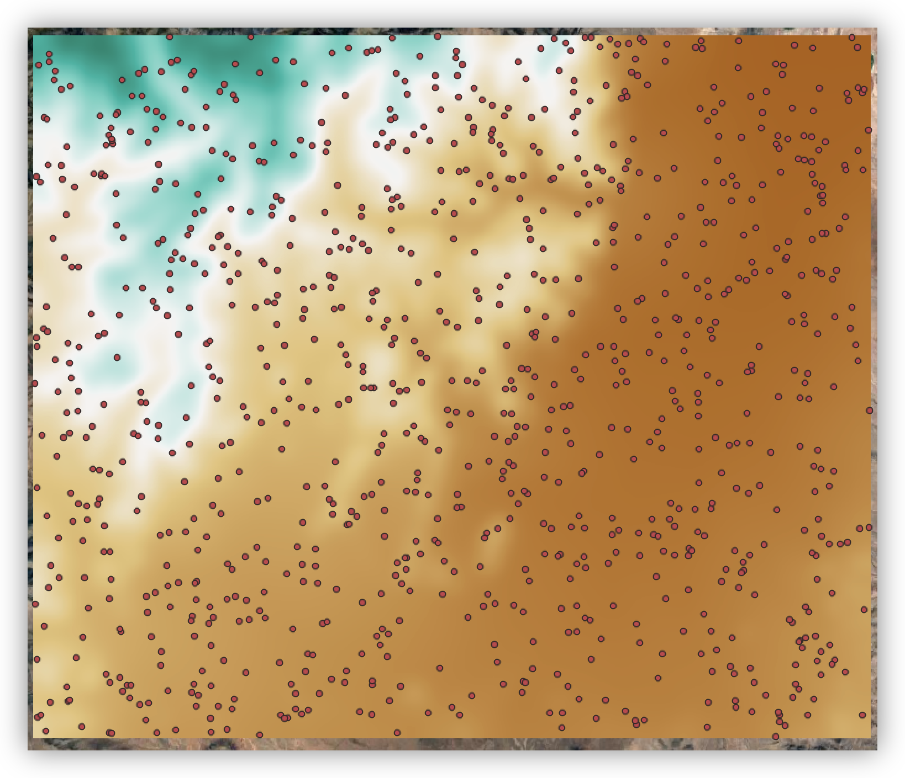
Nearest Neighbor Interpolation
Nearest Neighbor interpolation uses the single nearest value to calculate the value of each raster cell. This results in something a ‘stepped’ set of data values, where raster cells nearest a particular sample value, all take that value. This produced something similar to the pattern we saw with the Voronoi tool.
- Calculate and interpolation surface, this time using: Processing toolbox>GDAL>Raster Analysis>Grid (Nearest Neighbor)
- Specify:
- Point Layer:
Random1000Elevation - First & Second search ellipses:
1000 - Z value:
SAMPLE_1 - Use the Additional command-line parameters [optional] again to control the Cell Size and dimensions of output:
-tye 3498779.8925000000745058 3522569.8972999998368323 -txe 658307.9677000000374392 686597.9734000000171363 -outsize 943 793
- Browse and name the Output Interpolated (Nearest Neighbor) layer:
NNfromRandom1000.tif - Run the interpolation.

- Cut & Paste the Style from your original
ChirDEMlayer to the newNNfromRandom1000.tif - Create and add contour lines, as you did for the
IDW interpolation.

- Create a
NNHillshadelayer, using an Azimuth of 315 and a solar angle (elevation) of 25.

- Create a Nearest Neighbor Group containing the sample point, contours, interpolated raster layers within the Layers panel, naming it something like Nearest Group. Your results should look something like the figure here. However, since we are sampling randomly, each map will look slightly different.

Stratified Random Sampling of a Raster Layer
Sometimes we want to vary the sampling frequency across a map. Here, we’ll place more samples in steeper areas, and use individual polygon areas by slope class to control sampling density.
First we’ll create three zones, or strata, and then we’ll assign samples based on these strata. Here, we are using an elevation dataset, but this could, as easily, be used with a dataset like Landscan to stratify by population.
Our strata boundaries will be based on calculated slope, filtered to create larger, more generalized areas.
- Calculate the slope for
ChirDEM, using Raster>Analysis>Slope, using the default settings, and Browsing and saving asSlopeDegrees
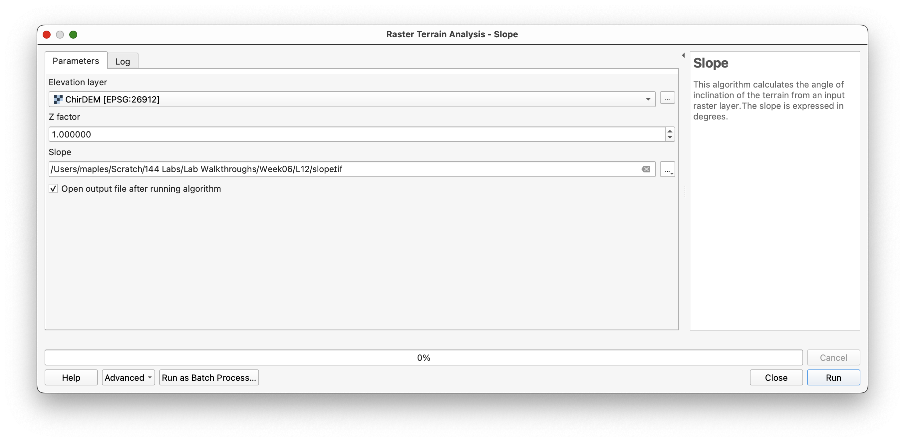
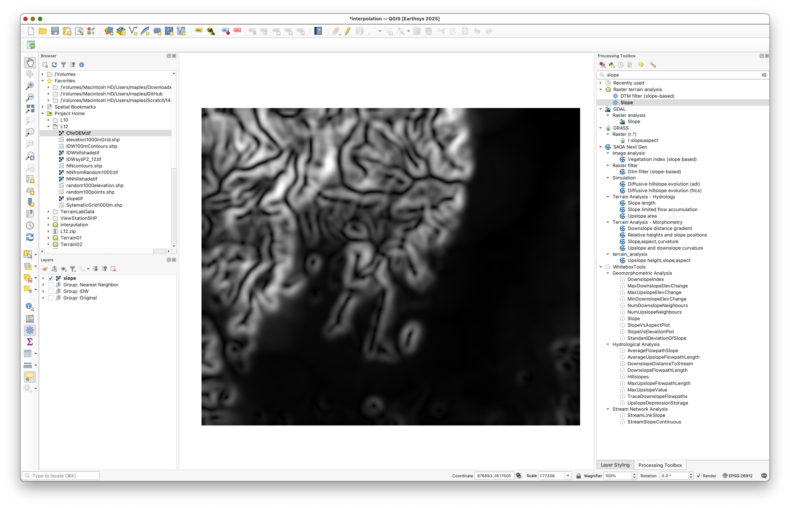
Reclassifying Raster Values
- Reclassify SlopeDegrees using Processing toolbox>Raster Analysis>Reclassify by table
- Click on the … next to the Reclassification table to create your classes.
- Use Add Row to add
3rows, then fill in the rows. - Use three classes, of:
up to 1.51.5-1818 and up
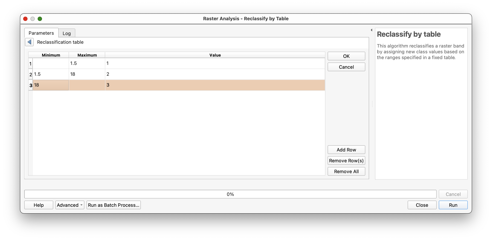
These values are chosen to yield acceptably balanced classes. Usually you stratify for some threshold of an attribute, e.g., slopes above which you can’t build, or elevations where you’re unlikely to find a resource of interest.
- Name the output something like
ReclassSlope
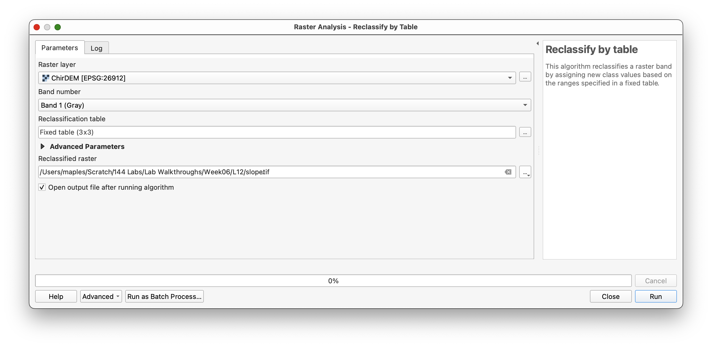
Your layer should look something like this:
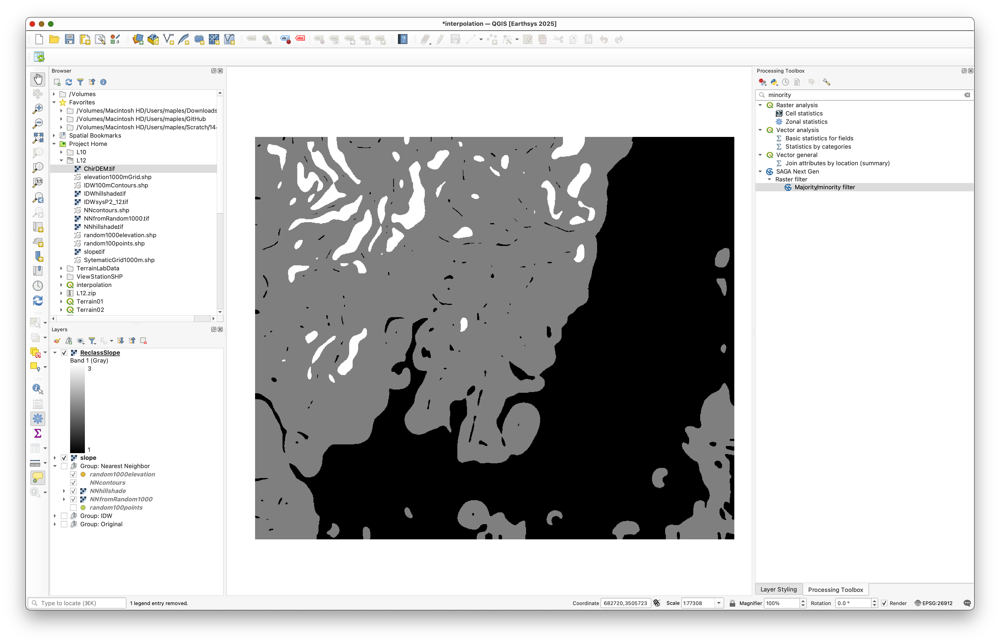
Removing Small Zones
Now we want to generalize the strata polygons, removing those from single cells or long, thin areas. Keeping them would complicate sampling needlessly. We’ll use something called a “Majority” filter, which creates a roving “neighborhood” window.
- Use Processing Toolbox>SAGA>Raster Filter>Majority/Minority filter
Specify:
- Type:
Majority - Search Mode:
Circle - Radius:
10 - Threshold:
50%
- Type:
- Name
ReclassSlopeMajority(Note that the only available output type is*.sdat)
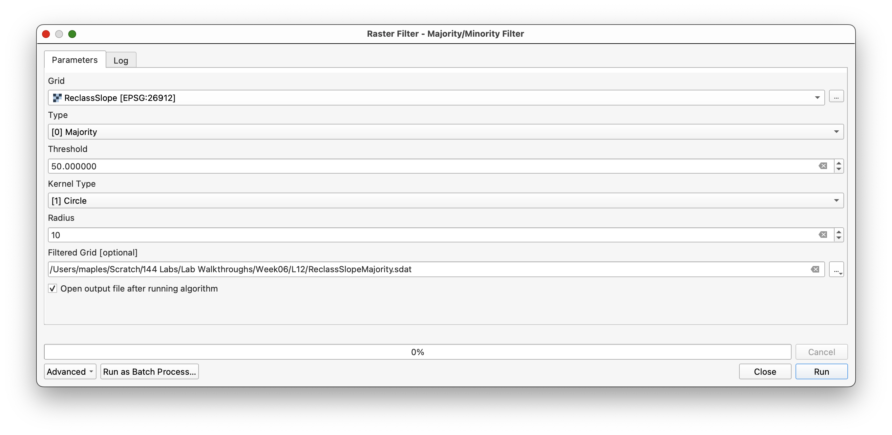
- Toggle the two layers to see that small zones have been removed.
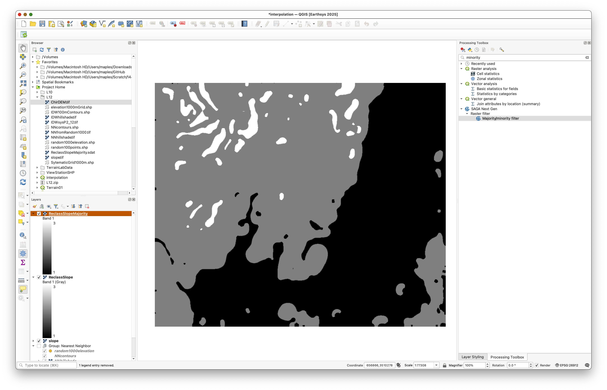
Raster to Vector Conversions
Convert the final smoothed raster to a vector layer:
- Use Raster Conversion>Polygonize
- Use the
defaultson yourReclassSlopeMajoritylayer - Name the output Vector polygons:
STRATA.shp

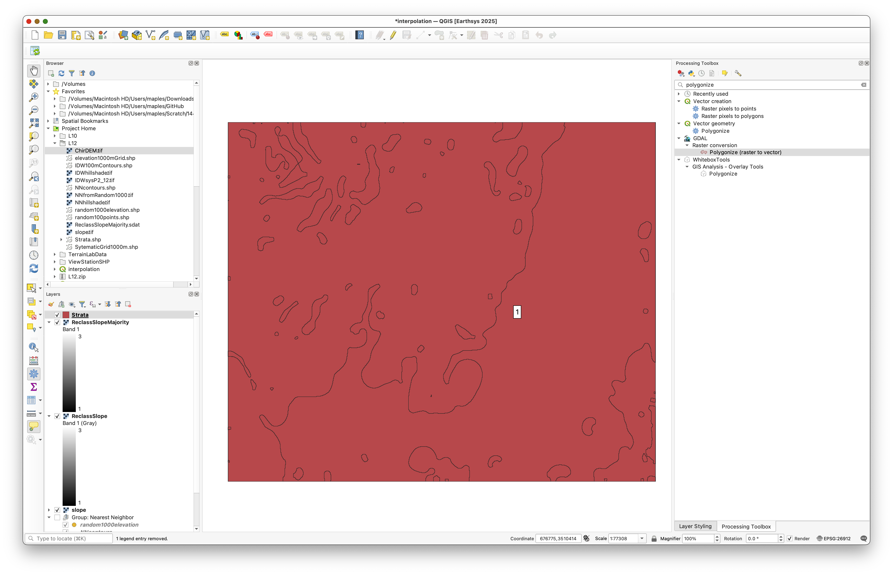
Calculating a Stratified Sampling Model
We would like to have a total of approximately 1000 sample points, with 25% of the sample points in the steepest areas (class 3)65% of the samples in the intermediate slope areas (class 2), and 10% of the samples in the flat (class 1).
This means 250 sample points in class 3, 650 in class 2, and 100 in the class 1 strata.
We can achieve this by distributing these samples over the polygons, based on the polygon area relative to the total area for the strata. For example, assume the largest steep polygon has an area of 116.3 square kilometers, and the total steep area is 192.5 square kilometers. So, this largest steep polygon should get 250 * 116.3/192.5, or 151 sample points.
We multiply the number of points for the strata by the polygon area, and divide it by the total area of the strata.
How do we get the polygon, class, and total strata area?
Remember from previous labs, we can calculate the area for each individual polygon by using the Field Calculator to edit the layer table.
You might recall that the steps are to:
- Open the data table for editing (i.e., the attribute table from the
STRATAlayer), Calculate the area into a new Decimal number (real) column named: SqKm using:
$area/ 1000000x
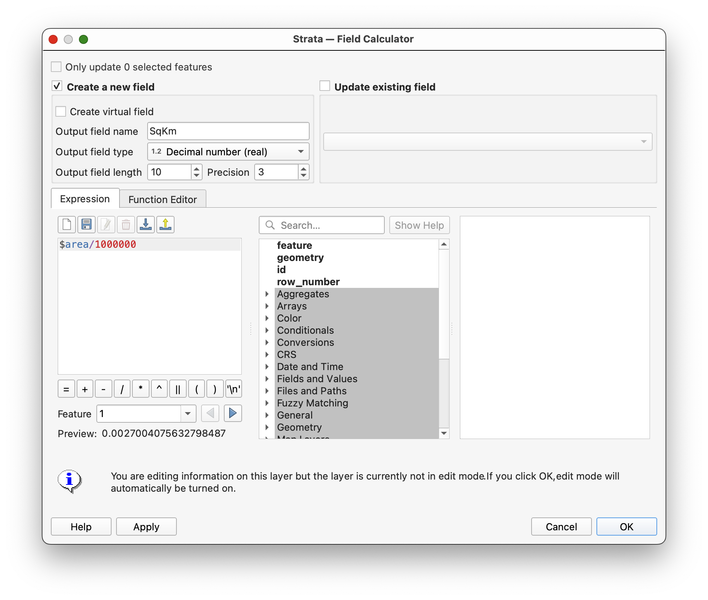
- save edits and toggle off editing.
Basic Statistics on a Field
We can then summarize the resulting column SqKm to get total square kilometers in the SqKm Field, or to get a total for a specific class/strata. Previously we’ve had you use the Basic Statistics tool to calculate summary statistics for all records in a column, including the sum.
- Use the Select features using an expression tool in the attribute table to select a class, e.g.,
class 1 (DN = 1)

- Use the Vector>Analysis>Basic Statistics for Fields tool, checking the box for Selected features only (figure below), for a sum of that class area.
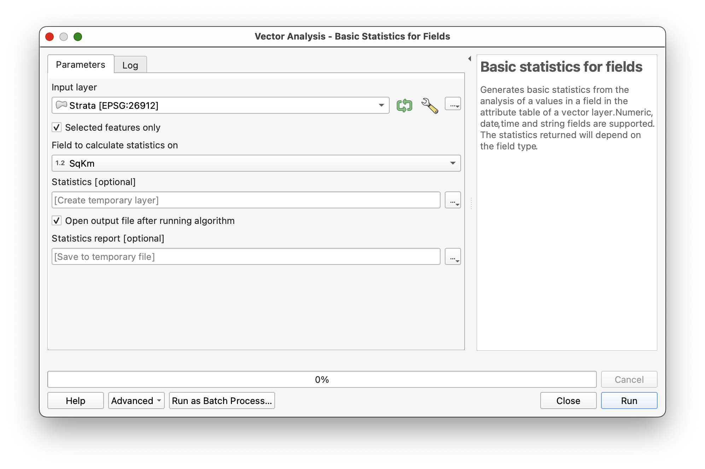
- Record the Total area (SUM) for your selected subset of features.
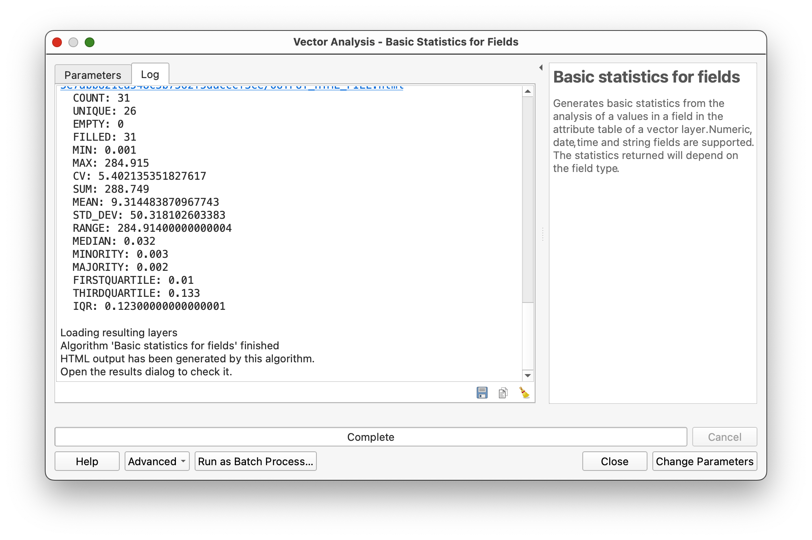
You can then use these with the individual polygon table entries for SqKm to calculate the number of sample points to apply per polygon.
You should arrive at calculated areas close to:
288.749square kilometers for theflat (DN = 1)strata359.184square kilometers for theintermediate (DN = 2)strata25.134square kilometers for thesteep (DN = 3)strata
Your numbers may be slightly different, but should be within a few percent of these areas if you used the methods we described above.
Calculating Samples per Polygon
- Open the
stratalayer attribute table and add a new long integer field namedsamp_num - Select all the polygons for a given strata (e.g., first DN=1)
Multiply the total number of points for each stratum (e.g., 100 for the flat strata, DN = 1) by the area of the polygon, divided by the total area of the strata (in this case 286.7), so:
DN=1:
100 * "SqKm" / 287.408- DN=2:
650 * "SqKm" / 357.3539 DN=3:
250 * "SqKm" / 25.1439Repeat for all three strata, selecting each DN, substituting the appropriate areas and number of samples for the strata, and calculating the number of points per strata.
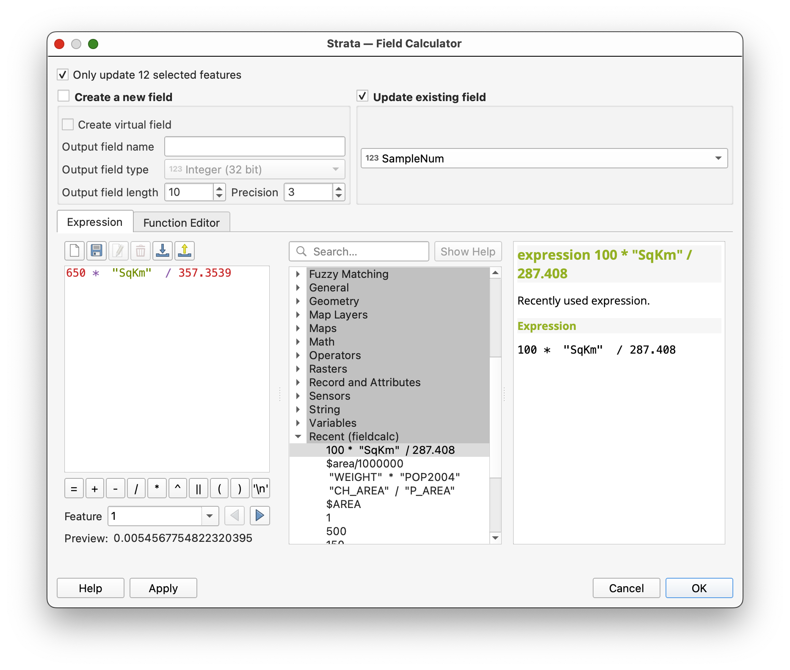
- Save your edits and toggle editing
Note that your numbers for the strata area and relative number of samples may be different than those shown if you applied a somewhat different set of generalization parameters in the previous work. Substitute your specific summary numbers.
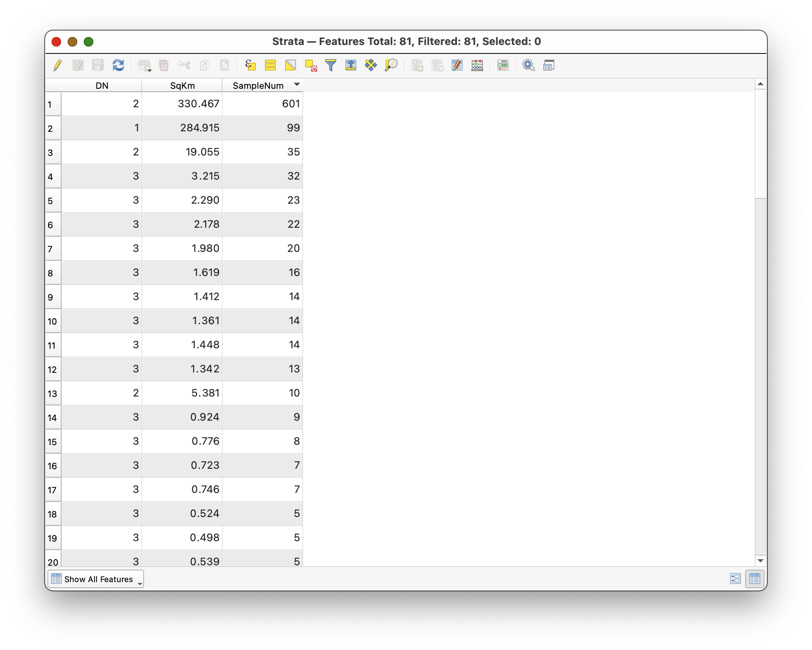
Now, to create the random points. We use the same tool as before, but this time specifying our new SampleNum column to determine the number of points, per feature
- Open the Vector>Research tools>Random Points in Polygons.
- Specify
Strataas the Input Polygon Layer - Click the button on the right end of the Number of points for each feature option, then a click on Field type>SampleNum in the drop-down to specify the field that holds the number of points for each feature.
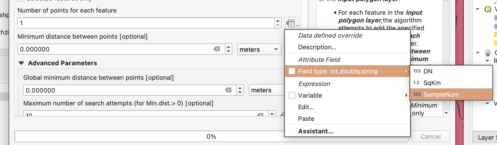
- Browse and save the Output Random points in polygons layer as
StrataRandom1000.shp
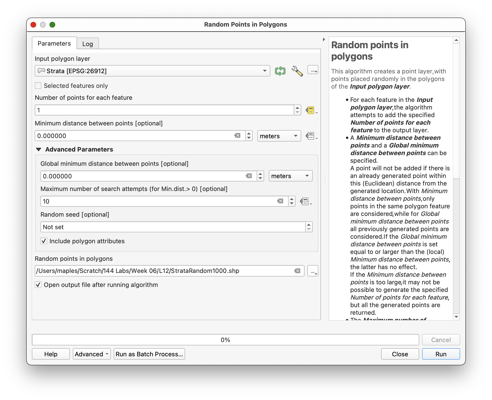
This should generate a sample set that looks something like that below, with a higher sampling density in the steeper areas of interest:
To add colors to your STRATA map, change symbology to “Categorized” and use “DN” for value.

Spline Interpolation
Now you will use this stratified random sample to produce one last interpolation method.
- First, use the methods previously described (Processing> Toolbox>Raster Analysis>Sample raster values) to once again sample/assign the
ChirDEMelevations found at each sample point, and saving the Output asStratRandElevationSamples.shp
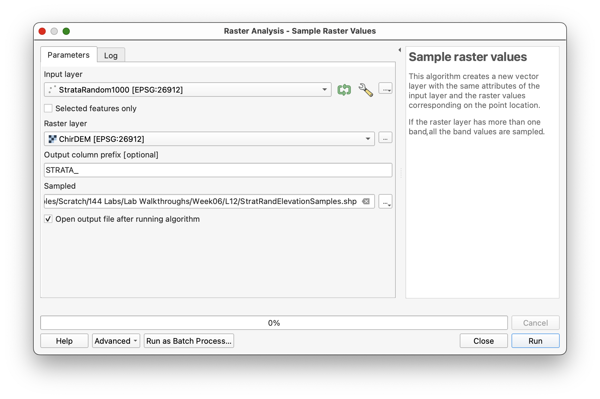
- Now, estimate a surface using a spline interpolation routine, found in the Processing Toolbox>SAGA>Raster Creation Tools>Multi-level b-spline.
- Specify
StratRandElevationSamplesas the Input points, and your sampled elevation (STRATA_1) - Output Extent: Calculate from Layer>
ChirDEM

- Cellsize:
30 - Refinement:
[1]yes - Threshold Error:
default - Maximum Level:
11 - Output Grid: Browse and name
SplineStratRand
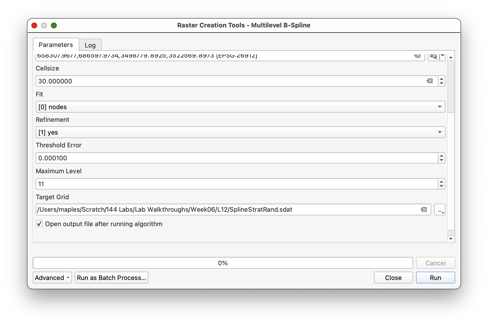
- After running the tool, calculate contours, Create a hillshade and apply the same style as the other Interpolation Layers, including applying transparency to the hillshade, etc...
- “Group” the Spline layers in the Layers panel.
To Turn In:
Display these “Groups” and the sample points on your layout. Arrange the layout so it looks approximately like that in the figure below, although your surfaces and contours may not be exactly the same, and you may use a different base color scheme. However, you should use the same set of symbology throughout, especially for the elevation surface, so that you may compare the results from the different methods more easily. Include appropriate title, labels, scale bar, name, and north arrow and submit as a PDF.
Hint:
As you create each Map in your layout, Lock each Item in the Item Properties list:

and check the option to Lock the Layers for each of the four Map Frames:

, so that you can work on the next, without effecting the previous.
HINT:
For the image, below, I used the following layer order and settings:
- Sample Points
- Size: .4 points
- Countours
- Stroke: 1 point
- DEM (Original or Interpolated)
- Rendering: Multiply
- Hillshade
Hint:
You can easilty COPY your styles from one layer to another (so that your layers match exactly, across groups), by right-clicking on the layer you want to copy the style from, and going to >Styles>Copy Style>All Style Categories, then using >Styles>Paste Style>All Style Categories on the layer you want to duplicate the styling too.